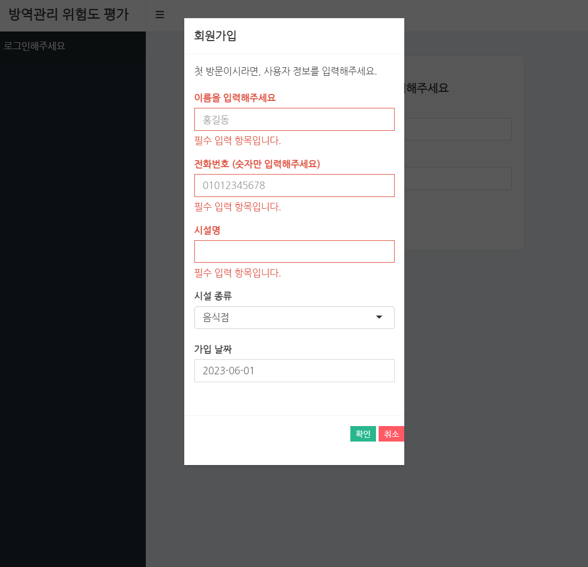

library(DBI);library(RSQLite)
# connection
con <- function() {
DBI::dbConnect(SQLite(),
dbname = "[path]/[DBname].sqlite")
#기존에 SQLite DB가 존재한다면 Connected, 아니면 create DB
}
# disconnection
discon <- function(){
dbDisconnect(con())
}R Shiny의 활용성은 무궁무진합니다. 다양한 Shiny 전용 패키지와 함수, Javascript, CSS와의 연계성 등 다양한 기능을 활용해 반응형 웹페이지 제작이 가능합니다.
본 글에서는 이렇게 무궁무진한 R Shiny로 웹 기반 방역관리 위험도 평가 대시보드를 제작한 경험을 공유하며 사용한 여러 기능을 소개하려고 합니다.
UI의 전반적인 레이아웃은 Shinydashboard를 사용했으며 본문에선 Shinydashboard와 Shiny의 기본 함수에 대한 설명은 생략합니다. 두 패키지에 대한 기본적인 함수 및 구조 설명은 아래 링크를 참조하세요.
Shinydashboard package : Shiny Dashboard
Shiny package : Mastering Shiny
1. DB : DBI & RSQLite
본 대시보드는 사용자별로 데이터 무결성이 유지되어야 했고 지속적인 데이터 수집이 필요했기에 DB를 따로 운영하기로 했습니다.
DB를 다룰 수 있는 DBI 패키지와 간단한 DBMS인 SQLite를 사용할 수 있는 RSQLite를 사용하여 DB 설계 및 유지 보수를 진행했습니다.
다음과 같이 DB connect / disconnect 함수를 따로 지정하여 초기 설정을 해줍니다.
DBI 패키지의 대부분의 함수는 parameter로 DBIconnection object를 요구합니다. 따라서 다음과 같이 con() 이라는 함수를 parameter로 호출하여 DBI의 함수를 사용할 수 있습니다.
# Example : DBname : database.sqlite
DBI::dbExecute(con(), "CREATE TABLE table1 (
keyvalue INTEGER(10) PRIMARY KEY,
value1 DATE,
value2 VARCHAR(20) CHECK(value2 IN ('a', 'b', 'c'))
)")
discon()
DBI::dbExecute(con(), "INSERT INTO table1 VALUES (?, ?, ?)", c(1, "2023-05-24", "a"))
DBI::dbGetQuery(con(), "SELECT * FROM table1")dbExecute 함수를 통해 실행하고자 하는 SQL문을 실행시킵니다. 이전에 생성한 con() 함수를 통해 DB에 연결한 뒤 SQL문을 문자열 형태로 입력하여 실행합니다. 또한 SQL문에 동적으로 R의 변수를 넣어야하는 경우, ?를 통해 SQL문을 입력한 뒤에 ?에 넣고자 하는 순서에 맞게 뒤에 vector 형태로 입력하면 됩니다.
dbGetQuery의 경우SELECT문같이 SQL Query의 결과를 갖고 오고 싶은 경우 사용합니다. 추출 결과를 dataframe 형태로 가져옵니다.
본 대시보드 제작 과정에선 RSQLite를 이용하여 Table 4개를 운용하였고, SQLite에서도 당연히 참조 무결성 제약조건(PK-FK)을 생성할 수 있기때문에 직접 R에서 코드를 작성하지 않고 SQL문을 통해 미리 제약조건을 생성할 수 있습니다.
2. Log in / Register : shinyauthr Customizing
Shiny 패키지 중 Log in/Log out UI를 제공하는 패키지는 대표적으로 shinymanager와 shinyauthr가 있습니다. 그러나 Shinymanager에는 회원가입 기능을 추가하기가 어려운 부분이 있어 shinyauthr를 사용하되, 살짝 코드를 수정하여 Log in/Log out/Register option을 Web에 추가하였습니다.
shinyauthr package의 주요 함수는 다음과 같습니다.
loginUI: log in UI를 보여주는 함수로 화면에 나타나는 메시지를 수정가능합니다.loginServer: log in의 base가 되는 database를 설정하고 id, password 설정, 쿠키 로그인 설정이 가능합니다.logoutUI: log out UI를 보여주는 함수로, 화면에 나타나는 메시지 및 css style을 수정할 수 있습니다.logoutServer: log out시 실행되는 함수로, 사용자의 권한(user_auth)를 boolean reactive 형태로 관리합니다.
login logic : loginUI에 ID/PW 입력 -> loginServer에서 확인 후 권한 부여
logout logic : logoutUI의 logout button 클릭 -> logoutServer에서 reactive하게 user_auth 상태 변경
(자세한 내용은 shinyauthr package 참조)
UI의 일반적인 구성은 다음과 같습니다.
ui <- dashboardPage(
skin = "black",
header = dashboardHeader(
title = ("방역관리 위험도 평가"),
tags$li(class = "dropdown", style = "padding: 8px;", shinyauthr::logoutUI("logout"))
),
sidebar = dashboardSidebar(
# menu
),
body = dashboardBody(
shinyauthr::loginUI("login",
title = h4(HTML("<center> 이름과 전화번호를 입력해주세요 </center>")),
user_title = "이름",
pass_title = "전화번호",
login_title = "로그인",
error_message = h6("유효하지 않은 정보입니다. 처음이시라면 회원가입을 눌러주세요.", style = "color : red"),
additional_ui = tags$a(
actionBttn(
inputId = "register",
label = "회원가입",
style = "fill",
color = "danger",
size = "xs"
)
)
),
# menu 별 UI
)
)본 UI는 shinydashboard를 기반으로 구성되어있습니다. 따라서 header에 logout 버튼을 생성하려 했고, dashboradBody에 login UI를 배치해 메인 화면에 바로 로그인 화면이 나오도록 하였습니다. 또한 loginUI의 parameter를 원하는 텍스트로 설정하였고, 회원가입은 additional_ui parameter를 이용하여 추가적으로 shinyWidgets::actionBttn 에 따른 UI가 생성되도록 설계하였습니다. 아래는 로그인 화면과 회원가입 버튼 클릭 시의 화면입니다.


그러나 loginServer 함수의 경우, 기본 ID/PW 저장 DB 세팅이 tidyverse 패키지의 tibble형태로 작성되어 있기 때문에 동적 형태의 DB를 지원하고 있지 않습니다.
예를 들어 회원 가입 후 즉시 로그인하기 위해선 새로운 사용자의 정보가 반영된 DB를 reactive하게 Call 해야하는데 이 부분에 제약사항이 있었습니다.
따라서 reactive하게 DB 정보를 받아올 수 있도록 함수를 수정해야 했습니다. (다음 링크 참조 : Shinyauthr loginServer Customizing)
server <- function(input, output, session) {
#login/logout function--------------------------------------
credentials <- Myloginserver(
id = "login",
log_out = reactive(logout_init()),
reload_on_logout = TRUE
)
logout_init <- shinyauthr::logoutServer(
"logout",
reactive(credentials()$user_auth)
)
userdata <- reactive({
credentials()$info
})
}Myloginserver는 customizing 된 shinyauthr::loginServer 함수이며 미리 생성된 사용자 정보 DB table을 바탕으로 로그인이 되도록 설정되어 있습니다. 기본적으로 shinyauthr::loginServer 함수는 info와 user_auth라는 변수를 담고 있습니다.
info의 경우, 로그인의 기반이 되는 DB 내에서 사용자의 ID/PW에 해당하는 row의 컬럼 값들을 table 형태로 저장하고 있습니다.user_auth의 경우, 권한이 있느냐 없느냐를 나타내며 로그인이 완료될 시 TRUE, 아닐 시 FALSE 값을 가지게 됩니다.
따라서 credentials이라는 변수에 loginServer 함수를 저장하면 reactive한 user_auth값과 info값을 지니게 됩니다.
reload_on_logout = TRUE로 설정하면 로그 아웃 시 세션이 초기화되어 자동으로 로그인 화면으로 돌아갑니다. 기본적으로 세션이 초기화되면 credentials()$user_auth == FALSE가 되어 로그인이 취소되고 권한이 사라지므로, 좀 더 확실한 로그아웃을 위해 다음과 같은 옵션을 설정하였습니다.
logout_init은 logoutServer 함수로 logoutUI의 ID를 받아온 뒤, reactive 함수에 따라 logout 버튼을 보여줄 지 숨길 지 반응형으로 설정할 수 있습니다. 기본적으로 권한이 있느냐 없느냐에 따라 logout 버튼을 보여주거나 숨겨야하기때문에 위와 같이 설정해줍니다.
또한 shinyauthr 패키지는 로그인 / 로그아웃 UI만 보여주고 로그인 상태에 따른 UI 변환 기능은 없기 때문에, 수동으로 로그인 완료시에만 보여주고 싶은 UI에는 옵션을 추가해야 합니다.
req(credential()$user_auth)다음과 같은 옵션을 uiOutput을 이용하여 renderUI에 추가하거나, 아래와 같이 MenuOutput 과 renderMenu를 이용하여 shinydashboard의 Menu 자체를 숨길 수 있습니다.
#UI
ui <- dashboardPage(
# others
sidebar = dashboardSidebar(
sidebarMenu(
id = "tabs",
menuItemOutput("check")
)
),
body = dashboardBody(
tabItems(
tabItem(tabName = "check",
# UI contents
)
)
)
)
#Server
server <- function(input, output, session) {
output$check <- renderMenu({
req(credentials()$user_auth)
menuItem("방역관리자 업무 점검", icon = icon("check", lib ="glyphicon"), tabName = "check")
})
}3. 필수 응답 설문 설정 : shinyvalidate
shinyvalidate package는 selectInput, numericInput 등 Input function에 대해 사용자의 입력값에 대한 제약조건을 걸 수 있는 package입니다.
기본적으로 필수적으로 응답해야는 부분에 대해 설정할 수 있으며, ‘<’ 등의 연산자를 사용한 제약조건, ‘email’ 형식 제약조건 등 여러가지 option이 있습니다.
본 개발에선 필수 응답 설문 항목에 대한 설정을 위해 다음과 같이 shinyvalidate package를 사용하였습니다.
[validation name] <- shinyvalidate::InputValidator$new()
[validation name]$add_rule("input$[input variable]", sv_required("[Warning message]"))기본적인 Logic은 다음과 같습니다.
InputValidator$new()를 통한 validation 변수 선언add_rule을 통한input variable별 Warning Message 작성

다음과 같이 필수 입력 항목의 경우, 응답하지 않을 시 기본적으로 빨간색 테두리와 작성한 경고 메시지가 뜨게 됩니다.
추가적으로 이러한 필수 응답 항목에 답하지 않을 시 다음단계로 지나가지 못하게 제약조건을 추가할 수 있습니다.
1. req([validation name]$is_valid())
2. if([validation name]$is_valid())다음과 같은 옵션을 추가하여 renderUI 혹은 actionButton click시의 전제 조건으로 추가하여 Web 설계가 가능합니다.
4. Reactable onClick 활용 : UI에서 동적으로 DB Table Update하기
본 대시보드의 관리자 버전에선 관리자가 컨설팅 완료 여부를 입력해야하는 기능이 필요했습니다.
또한 DB의 값이 관리자의 Web 내의 완료 여부 입력에 따라 같이 변경되어야 했습니다.
따라서 reactable 형태로 DB의 테이블을 보여준 뒤 cell 마다 onClick 옵션을 추가하여 binary 형태로 값을 자유롭게 변경할 수 있도록 기능을 추가했습니다.
아래는 reactable에 구현한 예시 코드입니다.
consult_rt <- function(table){
rt <-reactable(
data = table, # DB에서 받아온 테이블
onClick = JS("function(rowInfo, colInfo) {
var tb_index = {'colId': colInfo.id, 'rowId': rowInfo.id };
Shiny.setInputValue('consult_index', tb_index, { priority: 'event' })}"),
#...이외 내용 생략
)
}먼저 onClick parameter를 통해 각 cell을 클릭할 시의 reactive action을 설정해줍니다.
JS 함수를 통해 JavaScript 코드를 호출하였고, tb_index라는 variable을 선언하여 row Id와 column Id를 저장한 뒤 Shiny 내 consult_index라는 input 변수에 tb_index의 값이 저장되도록 하였습니다.
따라서 이 input 변수를 다음과 같이 활용하였습니다.
observeEvent(input$consult_index, {
# table : reactable에 사용한 table로 똑같이 DB에서 받아옴
rowid <- as.integer(input$consult_index$rowId) + 1
colid <- input$consult_index$colId
colname <- consult_list[match(colid, consult_list_name)] #원래 DB 컬럼명
userKey <- table[rowid][["KeyName"]] #해당 row의 DB Key
value <- table[rowid][[colname]] #실제 DB에서의 값
colname <- consult_list[match(colid, consult_list_name)]
date <- as.character(Sys.Date())
if(value %>% is.na()){
message <- h5("컨설팅 완료 상태로 변경되었습니다.")
query <- paste0("UPDATE consult SET ", colname, " = ? WHERE PKcolumn = ?")
dbExecute(con(), query, c(date, userKey))
discon()
}else{
message <- h5("컨설팅 미완료 상태로 변경되었습니다.")
query <- paste0("UPDATE consult SET ", colname, " = ? WHERE PKcolumn = ?")
dbExecute(con(), query, c(NA, userKey))
discon()
}
})consult_incex에 저장된 row Id와 column Id는 index 형태로, input$consult_index$rowId 형식으로 값을 받아올 수 있습니다.
받아온 index는 0부터 시작하고, DB table이 저장된 data.table 형태의 table은 index가 1부터 시작하기 때문에 +1 해주어 row의 index를 받아왔습니다.
이렇게 row의 index와 column의 index를 rowid, colid에 저장한 다음 table[rowid][["Key Name"]]을 통해 현재 row의 DB 내 key 값을 받아왔습니다.
현재 DB는 컨설팅 완료 시에는 컨설팅 완료 날짜를, 미완료 시에는 NA로 저장되어 있기 때문에 이를 ifelse 구문을 활용하여 각각의 경우에 맞게 코드를 작성하였습니다.
위에서 받아온 row의 DB Key 값을 이용해 SQL문으로 DB table에 접근하여 값을 update 해주었습니다.
(이렇게 변경된 DB table이 반영된 reactable을 사용자에게 동적으로 보여주기 위해선 UI 함수와 reactable을 재호출해야하는데, 이 부분에 대해선 생략하겠습니다.)
또한 shinyalert를 사용하여 값이 변경되었음을 팝업 메시지로 띄워주었습니다.
아래는 실제 UI에서 구현된 예시입니다.


5. 이 외
(1) reactable : reactive download to csv
admin을 위한 web page 제작 과정에서, DB table 들로부터 받아온 사용자 정보를 reactable을 이용하여 다음과 같이 제작하였습니다.

이러한 table을 csv로 다운로드 받을 수 있게 하면서도, 만약 사용자가 일부 사용자의 정보를 확인하고 싶어 검색 기능을 사용했을 때 보여지는 subset table을 reactive하게 csv로 다운로드 받을 수 있게 하려했습니다.
이 부분은 Reactable 공식 문서의 JavaScript API 이용 부분을 차용하여 작성하였습니다.
box(width = 12, title = "전체 사용자 정보" %>% h5c,
reactableOutput("infotable"),
br(),
htmltools::browsable(
tagList(
tags$button(
tagList(fontawesome::fa("download"), "Download CSV"),
onclick = "Reactable.downloadDataCSV('user_info', '[filename].csv')"
)
)
)
)UI 작성 Part에서 box를 통해 reactable을 이용한 사용자 정보를 보여주려고 한다면 위와 같이 filename 부분을 수정하여 작성하면 현재 Web에 보여지는 reactable을 Download to csv가 가능합니다.
(2) lapply를 이용한 설문 UI 간단하게 만들기
만약 설문의 스타일이 간단하거나 (Ex: 예/아니오 유형, 체크 유형, 점수 유형) 반복되는 경우 lapply함수를 통해 좀 더 간단하고 정갈하게 UI 및 Server 코드를 작성할 수 있습니다.
예를 들어, 해당하는 항목에 체크하는 형식의 설문이라면, 아래와 같이 미리 설문내용만 list 형태로 만들어 놓을 수 있습니다.
# example 5개 Question
Q_list <- c(
" 시설 위험도 평가 후 시설 별 맞춤형 방역관리 지침을 마련하였는가?",
" 정기적으로 종사자들에게 방역 수칙 교육·안내 하였는가?",
" 발열 및 호흡기 증상 유무를 확인하고 증상이 있는 경우 즉시 검사받도록 안내하였는가?",
" 감염병 예방수칙 홍보 안내문을 잘 보이는 곳에 배치 하였는가?",
" 환기 대장 및 소독 대장을 배치 하였는가?"
)
# Shiny Input 함수의 ID를 각 설문 항목별 name으로 지정 (이 때 DB를 사용하실 거라면 DB의 컬럼명으로 ID를 지정하면 간편합니다)
names(Q_list) <- paste0("q", 1:5)다음과 같이 설문 내용을 정리한 변수를 기반으로 Shiny 코드를 작성할 수 있습니다.
# UI code
lapply(names(Q_list)[1:5], function(x){
checkboxInput(x, Q_list[[x]], value = F)
})
# Server code
## 답변 여부에 따라 Yes or No 형식으로 저장
inputlist <- lapply(names(Q_list), function(x){
if(input[[x]]){
"Yes"
}else{
"No"
}
})
## DB에Insert (DB 컬럼 순서에 맞게)
DBI::dbExecute(con(), paste0("INSERT INTO [table name] values ('", paste(unlist(inputlist), collapse = "', '"), "')") )
discon()Shiny의 UI 내에서도 간편하게 위와 같이 lapply 함수를 사용하여 Input 함수를 나타내는 것이 가능합니다.
Input[[x]]로 사용자의 입력 내용에 접근 가능하므로 다음과 같이 inputlist로 Input 값에 접근에 DB에 저장할 수 있습니다.
설문 내용을 value로, Input ID 및 DB columnname을 name으로 할 시 좀더 간편하게 코드 작성이 가능합니다.
답변 유형(Yes or No, 점수 등등)에 따라 설문 datatable을 만들어 놓은 뒤 이에 맞게 datatable 컬럼 별로 lapply 함수를 잘 사용하여 UI 코드를 작성하면 보다 간편하게 Shiny를 이용하실 수 있습니다.
마치며
R만을 이용하여 Server와 UI를 동시에 제작하고 배포할 수 있다는 것이 R Shiny 의 가장 큰 장점입니다. 또한 오픈 소스가 활성화되어 있어 다양한 사용자 개발 library를 이용할 수 있으므로 사용하고 싶은 기능은 웬만하면 사용이 가능하며, 기존 library의 함수를 원하는 방식으로 변형하여 사용할 수도 있습니다. JavaScript나 CSS와도 호환이 잘 되기 때문에 UI 디자인까지 R이라는 한 Tool로 작업이 가능하기 때문에 상당히 편리합니다.
본 글에선 이러한 R Shiny 웹 App의 기반이 되는 로그인 시스템, DB 운용 등 잘 알려지지 않은(?) 여러가지 세세한 기능과 가능성에 대해 소개해보았습니다.
이외에 여러 package를 공부해가며 나만의 Shiny Web App을 제작해보는 과정 역시 재미있으니, 많은 분들께서 R Shiny를 이용하여 멋진 웹 페이지 제작에 참여해보시길 바라겠습니다.
Reuse
Citation
BibTeX citation:
@online{kim2023,
author = {Kim, Yeongho},
title = {R {Shiny} {기반} {방역관리} {위험도} {평가} {대시보드}},
date = {2023-06-20},
url = {https://blog.zarathu.com/posts/2023-05-24-surveyDashboardR},
langid = {en}
}
For attribution, please cite this work as:
Kim, Yeongho. 2023. “R Shiny 기반 방역관리 위험도 평가
대시보드.” June 20, 2023. https://blog.zarathu.com/posts/2023-05-24-surveyDashboardR.